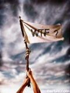

De: La Frikipedia, la enciclopedia extremadamente seria.
De: La Frikipedia, la enciclopedia extremadamente seria. De: La Frikipedia, la enciclopedia extremadamente seria.
La Torre Goon es básicamente, un hito de la ingeniería. Mide aproximadamente 50,48 Km de altura y sus sótanos llegan a los 11 Km bajo tierra. Se compone de aproximadamente 16800 pisos y es el edificio más alto y más ilustre de la Ciudad Frikipedia. En 2004 Gallardón inició obras en el piso Quincuagésimoprimer Centésimo Décimo Sexto.
La Torre Goon es en realidad la torre de Babel restaurada por Gaudi en el año 34 a.C. La trasladaron piedra a piedra y actualmente se encuentra en West Chiclana, República Independiente Anarcosindicalista de Zebiya. De hecho, desde la Torre del Oro (del que cagó el moro, se puede visualizar en el skyline de tan bella ciudad un objeto fálico de proporciones titánicas (ríete tú del cimbrel de Nacho Vidal).
Como el nombre de esta cutre-sección sugiere, aquí enumeraremos los lugares más simbólicos de aquesta magna construcción por monos ebrios.
"Visite nuestro hotel, visite nuestro hotel, nuestro recepcionista se masturba con los pies..." Ése era el lema con el que los dueños del piso 12956 intentaban atraer la atención de octogenarios en busca de acción. En este piso se han realizado todo tipo de bizarradas entre ancianos, especímenes homínidos hembra, Locust, Perros, Caballos y demás mamíferos y algún que otro anfibio y/o reptil. Pero, debido a una redada de la Anís del Mono. Casualmente, aproximadamente del 90-95% de la mercancía confiscada desaparició sin rastro... Taaaa-riii-roooo-riiii-rooooo-riiiii (léase con tonillo de Expediente X).
En estos pisos, adquiridos por Canal Pus y Telahínco, podemos ver a diario episodios de nuestros reality shows favoritos, actualmente se encuentran en emisión:
Así es, en el año 2032 a.P.E.S. (Después de Pro Evolution Soccer, no confundir con "monos" en inglés), la corporación Sombrilla creó este peculiar deporte, y lo más gracioso es que se legalizó, y se retransmite diariamente por la ESPN (ESePeNe) Norteamericana. Los "re-spawns" no existen, sino que se usan clones de los participantes, a los que previamente se les ha lavado el cerebro. También tenemos, si somos muy sibaritas, la posibilidad de poder manejar a un participante al que le han sido implantados chips neuronales en el cerebro. Además, podemos mejorar a nuestro personaje mediante expansiones de nanochips, como si de un RPG se tratase.
Aquí metemos una breve descripción sobre los niveles disponibles en el modo Deathmatch:
| Foto | Nombre del nivel | Descripción | Armas por defecto | Powerups ocultos |
|---|---|---|---|---|

|
Facing Worlds Classic2 | Nivel importado del UT2004 pero con una pequeña mejora. Hay 4 fortines en la isla asteroide en lugar de 2. Básicamente es una isla asteroide simétrica en la que en el centro suele salir el Quad Damage o el Bukkake Damage, depende de las opciones. | Pistol, Rifle con Motosierraaaaaarr, Consolator Gun, Martillo de la Calva, HPK-90 Condom Launcher, Steel Cayado. | Quad Damage |

|
Q3tourney6 o The Very End of You | Nivel importado directamente del Quake III Arena, el más épico de todos (qué hijo de puta que era Xaero). En este nivel si te caes al vacío, al igual que en Facing Worlds Classic2, te cuelas por un Bujero Negro y eres absorbido por el ojal de Goatseman. | Martillo de la Calva, Consolator Gun, P90, AK47, AK74-UN, Pistol Launcher (Lanzapistolas), CH4 Grenade, Incen Grenade. | Goatse Satellite Strike (Receptor de llamada a un satélite de Goatse que absorbe tó mediante un Bujero Negro. |
| DM1on1Goatse | Escenario circular con una gravedad muy peculiar: G tiende a los extremos del ojete (G es gravedad, no punto G). También es un escenario muy rápido perfecto para duelos 1 contra 1. | Bukkake Launcher, Consolator Gun | Unlimited Condoms/Unlimited Ammo | |
|  | CTFWTF (Capturar la bandera ¿Pero qué coño? (¿Qué la cogida?) | Supina mamarrachada de nivel creado por un mono ciego con las manos atadas a la espalda mientras se dedicaba al fornicio con un taxista sifilítico en paro. | Not Avaliable Yet | Unlimited Condoms |
| CTFMierda pinchada en un palo | Como el nombre y la afoto indican, es una mierdaca pinchá en un palo, adaptada para partidas Capturar la Bandera. | Pedruscos de mierda | Megashit | |
| CTF1on1-Pelopolla | Nivel de uno contra uno en el modo de Capturar la Bandera en un pelo de polla. Al igual que el nivel del Goatse, este tiene una gravedad peculiar. Aunque saltes, no te puedes caer al vacío. Es algo así a lo similar en los cilindros (cilindros de verdad, no confundir con cipotes) del F-Zero GX para Noentiendo Gamecube. | Steel Cayado | Ladillas Propagator |
Pues eso. Que el gobierno ha alquilado varios apartamentos en el piso -28 de tan célebre lugar para usarlos en su plan de viviendas pseudohabitables por seres humanos. A las "soluciones habitacionales para familias unipersonales", se les suele denominar también pocilgas, en las que la habitación se podría llamar marranera y a la familia unipersonal residente en ella chino (animal, no confundir con los cerdos comunistas de la China Popular.
Así es, amiguitos. Nuestro magnánimo, coprónimo e ilustre colega de Goatse le lanzó una OPA (relativo a la economía, no confundir con El Koala) al propietario del piso número 9104, y consiguió absorberlo (esta vez no se sabe si la absorción fue mediante un Jesucristo Follador, aunque eso es costo de otro harinal harina de otro costal.
Autor(es):